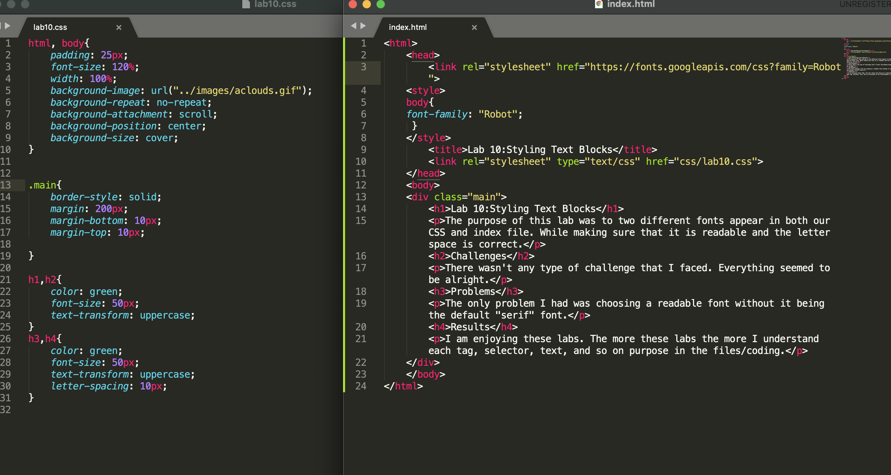

Lab 10:Styling Text Blocks
The purpose of this lab was to two different fonts appear in both our CSS and index file. While making sure that it is readable and the letter space is correct.
Challenges
There wasn't any type of challenge that I faced. Everything seemed to be alright.
Problems
The only problem I had was choosing a readable font without it being the default "serif" font.
Results
I am enjoying these labs. The more these labs the more I understand each tag, selector, text, and so on purpose in the files/coding.
